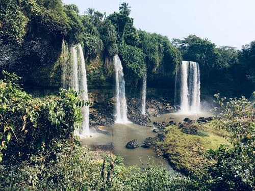

South-South Nigeria Legendary Waterfalls/Rivers
 Kwa Falls
Kwa Falls
- Kwafalls located in Akamkpa Cross River State.
- Well arranged 234 steps leading down to the river.
- Sparkling natural water flowing through mounds of Igneous rocks.
- Surrounding breathtaking tropical mangrove forest.
- Highly suitable for peaceful relaxation admist the adventurous rafting tours.

Agbokim Waterfalls
- Abokim Water falls situated in Etung Cross River State.
- Captivating Seven streams cascading down the high cliff into the tropical rainforest
- Lovely historical site between Cameroon and Cross River State
Ibeno River
- Costal paradise in Akwa Ibom State.
- Longest sand beach in West Africa stretching over 30km.
- Spectacular tourist attraction site.
Book now for an all encompassing memorable water rafting event
| Available Boat Trips |
| Day |
Date |
Time |
Cost |
Location |
| Friday |
24th Oct. 25 |
9.00am |
$50 |
Kwa falls |
| Thursday |
30th Oct. 25 |
12.00noon |
$30 |
Agbokim water falls |
| Saturday |
8th Nov. 25 |
8.00am |
$100 |
Ibeno River |
| Thursday |
13th Nov. 25 |
12.00noon |
$30 |
Kwa falls |
| Friday |
14th Nov. 25 |
9.00am |
$50 |
Agbokim water falls |
| Saturday |
15th Nov 25 |
8.00noon |
$100 |
Ibeno River |
| Thurday |
20th Nov. 25 |
12.00noon |
$30 |
Kwa falls |